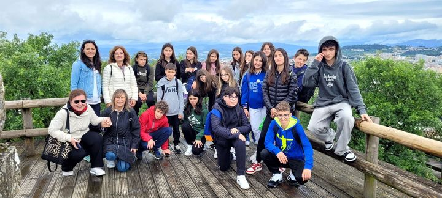

NomeIstituto Comprensivo Pescara 6
MateriaErasmus+
Anni2024–2026
Una sola Europa
Il diario delle mobilità Erasmus+ dell'Istituto Comprensivo Pescara 6: foto, video e testimonianze di studenti e docenti in giro per l'Europa.
11 mobilità5 paesi200 foto35 storie
si comincia da Braga, maggio 2024



La mappa
tocca un cerchio per aprire la pagina
Pescara, la nostra scuolaBragaThessalonikiCarlow · DublinElche ×2MadeiraBenalúaBarcelonaPraga ×2Le mobilità
2026


2025

pagina 9
12 foto · 1 video · 2 storieStaff Mobility
pagina 8
17 foto · 1 video · 2 storieJob Shadowingpagina 7
19 foto · 1 video · 6 storieGroup Mobility
pagina 6
7 fotoCourses & Training
pagina 5
16 foto · 4 storieCourses & Trainingpagina 4
21 foto · 1 video · 4 storieGroup Mobility
pagina 3
16 foto · 1 videoJob Shadowing
pagina 2
14 foto · 1 video · 1 storiaJob Shadowing